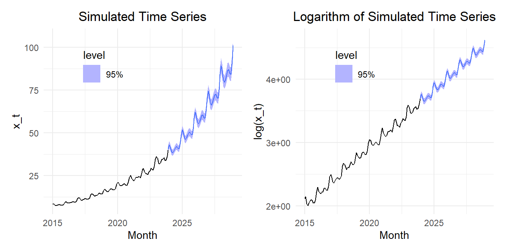
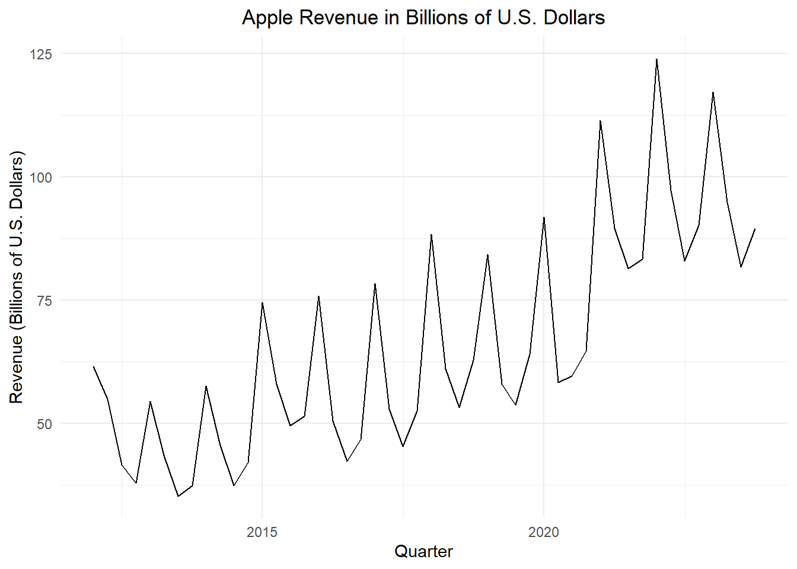
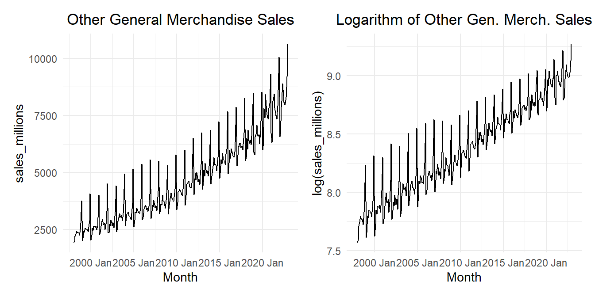

Forecasting, Inverse Transformation, and Bias Correction
Chapter 5: Lesson 5
Learning Outcomes
Apply logarithmic transformations to time series
Apply a log-transformation to a multiplicative time series
Apply the bias correction factor for inverse transformations
State the bias correction procedure for log-transform estimates
Explain when to use the bias correction factor
Use the bias correction factor for a log-transform model
Forecast using the inverse-transform and bias correction of a log-transformed model
Preparation
Read Sections 5.9-5.11
Learning Journal Exchange (10 min)
Review another student’s journal
What would you add to your learning journal after reading another student’s?
What would you recommend the other student add to their learning journal?
Sign the Learning Journal review sheet for your peer
Class Activity: Forecasts for a Simulated Time Series (15 min)
In Lesson 4 of this chapter, we simulated a time series with an exponential trend. In this lesson, we will forecast future values based on our model.
Figure 1 shows the simulated time series and the time series after the natural logarithm is applied.
Show the code
set.seed(12345)n_years <-9# Number of years to simulaten_months <- n_years *12# Number of monthssigma <- .05# Standard deviation of random termz_t <-rnorm(n = n_months, mean =0, sd = sigma)dates_seq <-seq(floor_date(now(), unit ="year"), length.out=n_months +1, by="-1 month") |>floor_date(unit ="month") |>sort() |>head(n_months)sim_ts <-tibble(t =1:n_months,dates = dates_seq,random =arima.sim(model=list(ar=c(.5,0.2)), n = n_months, sd =0.02),x_t =exp(2+0.015* t +0.03*sin(2* pi *1* t /12) +0.04*cos(2* pi *1* t /12) +0.05*sin(2* pi *2* t /12) +0.03*cos(2* pi *2* t /12) +0.01*sin(2* pi *3* t /12) +0.005*cos(2* pi *3* t /12) + random ) ) |>mutate(cos1 =cos(2* pi *1* t /12),cos2 =cos(2* pi *2* t /12),cos3 =cos(2* pi *3* t /12),cos4 =cos(2* pi *4* t /12),cos5 =cos(2* pi *5* t /12),cos6 =cos(2* pi *6* t /12),sin1 =sin(2* pi *1* t /12),sin2 =sin(2* pi *2* t /12),sin3 =sin(2* pi *3* t /12),sin4 =sin(2* pi *4* t /12),sin5 =sin(2* pi *5* t /12),sin6 =sin(2* pi *6* t /12)) |>mutate(std_t = (t -mean(t)) /sd(t)) |>as_tsibble(index = dates)plot_raw <- sim_ts |>autoplot(.vars = x_t) +labs(x ="Month",y ="x_t",title ="Simulated Time Series" ) +theme_minimal() +theme(plot.title =element_text(hjust =0.5) )plot_log <- sim_ts |>autoplot(.vars =log(x_t)) +labs(x ="Month",y ="log(x_t)",title ="Logarithm of Simulated Time Series" ) +theme_minimal() +theme(plot.title =element_text(hjust =0.5) )plot_raw | plot_log
Figure 1: Time plot of the time series (left) and the natural logarithm of the time series (right)
We can use the forecast() function to predict future values of this time series. Figure 2 illustrates the forecasted values for the time series.
Show the code
# Fit model (OLS)reduced_linear_lm1 <- sim_ts |>model(reduced_linear1 =TSLM(log(x_t) ~ std_t + sin1 + cos1 + sin2 + cos2 + sin3 + cos3))# Compute forecastn_years_forecast <-5n_months_forecast <-12* n_years_forecastnew_dat <-tibble(t = n_months:(n_months + n_months_forecast )) |>mutate(dates =seq(max(dates_seq), length.out=n_months_forecast +1, by="1 month") ) |>mutate(std_t = (t -mean(pull(sim_ts, t))) /sd(pull(sim_ts, t)),cos1 =cos(2* pi *1* t /12),cos2 =cos(2* pi *2* t /12),cos3 =cos(2* pi *3* t /12),cos4 =cos(2* pi *4* t /12),cos5 =cos(2* pi *5* t /12),cos6 =cos(2* pi *6* t /12),sin1 =sin(2* pi *1* t /12),sin2 =sin(2* pi *2* t /12),sin3 =sin(2* pi *3* t /12),sin4 =sin(2* pi *4* t /12),sin5 =sin(2* pi *5* t /12)) |>as_tsibble(index = dates)forecast_plot_regular <- reduced_linear_lm1 |>forecast(new_data = new_dat) |>autoplot(sim_ts, level =95) +labs(x ="Month",y ="x_t",title ="Simulated Time Series" ) +theme_minimal() +theme(legend.position.inside =c(0.3, 0.8)) +theme(plot.title =element_text(hjust =0.5) )forecast_plot_logged <- reduced_linear_lm1 |>forecast(new_data = new_dat) |>autoplot(sim_ts, level =95) +scale_y_continuous(trans ="log", labels =trans_format("log")) +labs(x ="Month",y ="log(x_t)",title ="Logarithm of Simulated Time Series" ) +theme_minimal() +theme(legend.position.inside =c(0.3, 0.8)) +theme(plot.title =element_text(hjust =0.5) )forecast_plot_regular

Figure 2: Forecasted values of the time series (left) and the natural logarithm of the time series (right)
Histogram of residuals
temp_df <- reduced_linear_lm1 |>residuals() |>as_tibble() |> dplyr::select(.resid) |>rename(x = .resid) temp_df |>mutate(density =dnorm(x, mean(temp_df$x), sd(temp_df$x))) |>ggplot(aes(x = x)) +geom_histogram(aes(y =after_stat(density)),color ="white", fill ="#56B4E9", binwidth =0.01) +geom_line(aes(x = x, y = density)) +theme_bw() +labs(x ="Values",y ="Frequency",title ="Histogram of Residuals from the Full Quadratic Model" ) +theme(plot.title =element_text(hjust =0.5) )
skewness(temp_df$x)
[1] -0.1350209
NEGLIGIBLE NEGATIVE SKEWNESS
Small Group Activity: Apple Revenue (xxx min)
Apple revenue - This is good, after 2012
apple_ts <- rio::import("data/apple_revenue.csv") |>mutate(dates =round_date(mdy(date), unit ="quarter")) |>filter(year(dates) >=2012) |> dplyr::select(dates, revenue_billions) |>mutate(t =1:n()) |>mutate(std_t = (t -mean(t)) /sd(t)) |>mutate(sin1 =sin(2* pi *1* t /4),cos1 =cos(2* pi *1* t /4),cos2 =cos(2* pi *2* t /4) ) |>as_tsibble(index = dates)apple_ts |>autoplot(.vars = revenue_billions) +labs(x ="Quarter",y ="Revenue (Billions of U.S. Dollars)",title ="Apple Revenue in Billions of U.S. Dollars" ) +theme_minimal() +theme(plot.title =element_text(hjust =0.5))

apple_ts |>autoplot(.vars =log(revenue_billions)) +labs(x ="Quarter",y ="Log of Revenue (Billions of U.S. Dollars)",title ="Logarithm of Apple Revenue in Billions of U.S. Dollars" ) +theme_minimal() +theme(plot.title =element_text(hjust =0.5))
Show the code
# Cubic model with standardized time variablefull_cubic_lm <- apple_ts |>model(full_cubic =TSLM(log(revenue_billions) ~ std_t +I(std_t^2) +I(std_t^3) + sin1 + cos1 + cos2 )) # Note sin2 is omittedfull_cubic_lm |>tidy() |>mutate(sig = p.value <0.05)
Table 1: Comparison of the AIC, AICc, and BIC values for the models fitted to the logarithm of the simulated time series.
Model
AIC
AICc
BIC
full_cubic
-214.7
-211
-199.7
full_quad
**-215.5**
**-212.7**
**-202.4**
full_linear
-206.5
-204.4
-195.3
temp_df <- full_quad_lm |>residuals() |>as_tibble() |> dplyr::select(.resid) |>rename(x = .resid) temp_df |>mutate(density =dnorm(x, mean(temp_df$x), sd(temp_df$x))) |>ggplot(aes(x = x)) +geom_histogram(aes(y =after_stat(density)),color ="white", fill ="#56B4E9", binwidth =0.02) +geom_line(aes(x = x, y = density)) +theme_bw() +labs(x ="Values",y ="Frequency",title ="Histogram of Residuals from the Full Quadratic Model" ) +theme(plot.title =element_text(hjust =0.5) )
Small Group Activity: Retail Sales (xxx min)
Retail Sales (All Other General Merchandise Stores)
Figures
Show the code
# Read in retail sales data for "all other general merchandise stores"retail_ts <- rio::import("https://byuistats.github.io/timeseries/data/retail_by_business_type.parquet") |>filter(naics ==45299) |>mutate(t =1:n()) |>mutate(std_t = (t -mean(t)) /sd(t)) |>mutate(cos1 =cos(2* pi *1* t /12),cos2 =cos(2* pi *2* t /12),cos3 =cos(2* pi *3* t /12),cos4 =cos(2* pi *4* t /12),cos5 =cos(2* pi *5* t /12),cos6 =cos(2* pi *6* t /12),sin1 =sin(2* pi *1* t /12),sin2 =sin(2* pi *2* t /12),sin3 =sin(2* pi *3* t /12),sin4 =sin(2* pi *4* t /12),sin5 =sin(2* pi *5* t /12) ) |>filter(as_date(month) >=my("Jan 1998")) |>as_tsibble(index = month)retail_ts |>autoplot(.vars = sales_millions) +labs(x ="Month",y ="Sales (Millions of U.S. Dollars)",title =paste0(retail_ts$business[1], " (", retail_ts$naics[1], ")") ) +theme_minimal() +theme(plot.title =element_text(hjust =0.5))
Figure 3: Time plot of the total monthly retail sales for all other general merchandise stores (45299)
Figure 4 shows the “All other general merchandise” retail sales data.
Show the code
plot_raw <- retail_ts |>autoplot(.vars = sales_millions) +labs(x ="Month",y ="sales_millions",title ="Other General Merchandise Sales" ) +theme_minimal() +theme(plot.title =element_text(hjust =0.5) )plot_log <- retail_ts |>autoplot(.vars =log(sales_millions)) +labs(x ="Month",y ="log(sales_millions)",title ="Logarithm of Other Gen. Merch. Sales" ) +theme_minimal() +theme(plot.title =element_text(hjust =0.5) )plot_raw | plot_log

Figure 4: Time plot of the time series (left) and the natural logarithm of the time series (right)
temp_df <- full_quad_lm |>residuals() |>as_tibble() |> dplyr::select(.resid) |>rename(x = .resid) temp_df |>mutate(density =dnorm(x, mean(temp_df$x), sd(temp_df$x))) |>ggplot(aes(x = x)) +geom_histogram(aes(y =after_stat(density)),color ="white", fill ="#56B4E9", binwidth =0.02) +geom_line(aes(x = x, y = density)) +theme_bw() +labs(x ="Values",y ="Frequency",title ="Histogram of Residuals from the Full Quadratic Model" ) +theme(plot.title =element_text(hjust =0.5) )
WE USE THE LOGNORM CORRECTION FACTOR
Small Group Activity: Industrial Electricity Consumption in Texas (xxx min)
Electricity
These data represent the amount of electricity used each month for industrial applications in Texas.
elec_ts <- rio::import("data/electricity_tx.csv") |>select(-comments) |>mutate(month =my(month)) |>mutate(t =1:n(),std_t = (t -mean(t)) /sd(t) ) |>mutate(cos1 =cos(2* pi *1* t /12),cos2 =cos(2* pi *2* t /12),cos3 =cos(2* pi *3* t /12),cos4 =cos(2* pi *4* t /12),cos5 =cos(2* pi *5* t /12),cos6 =cos(2* pi *6* t /12),sin1 =sin(2* pi *1* t /12),sin2 =sin(2* pi *2* t /12),sin3 =sin(2* pi *3* t /12),sin4 =sin(2* pi *4* t /12),sin5 =sin(2* pi *5* t /12) ) |>as_tsibble(index = month)elec_ts